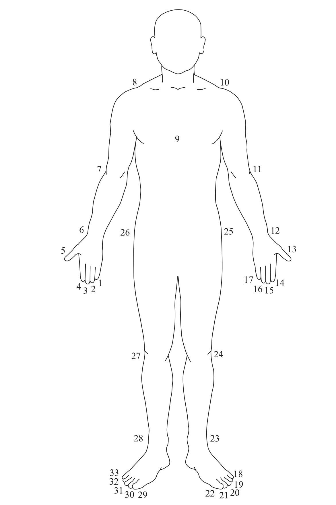

当我们的祖先第一次开始讲话时，他可能只能说出数字1、2，或许还有3。单一、双重、三重是知觉上的特性，不用数数，我们的大脑就可以毫不费力地计算出来。因此，给它们命名也许不会比命名其他感官属性更难，如红、大或热。
语言学家詹姆斯·赫福德（James Hurford）收集了相当多的证据，证明了前3个数词的古老及其特殊地位1。在需要对语义格和阴阳性进行词形变化的语言中，往往只有前3个数词是可以变形的。例如，在古德语中，“二”可以根据所指对象的语法性别而被变形成“zwei”、“zwo”或“zween”。同样，前3个序词也有特定的形式。例如，在英语中，大部分的序词以“th”结尾，如，“fourth”（第四）、“fifth”（第五）等，但“first”（第一）、“second”（第二）和“third”（第三）却不是。
数字1、2和3，也是仅有的可以由语法变换（grammatical inflections）(10)，而不是文字变化来体现含义的数字。在许多语言中，单词不光带有单数或复数的标记。不同的单词结尾也可以用来区分两个东西（dual）和两个以上的东西（plural），一些语言甚至有特殊的变形来表示三个东西（trial）。例如，在古希腊，“o hippos”指的是这匹马，“to hippo”指两匹马，“toi hip-poi”指数目不详的马。但从来没有哪种语言发展出针对大于3的数字的特殊语法变换。
另外，前3个数字的词源也见证了它们的悠久历史。“2”（two）和“第二”（second），往往表达了“另一个”的意思，动词（to second）或形容词（secondary）形式也是如此。印欧语系中“三”的词根表明，它可能曾经是最大的数字，是“很多”和“超过其他所有”的代名词，比如，法语中有“très”（非常），意大利语中有“troppo”（太多），英语中有“through”（彻底），拉丁语中有前缀“trans-”（超过）。因此，也许印欧语系的人们知道的数量仅限于“一个”（1）、“一个和另一个”（2），还有“很多”（3及更多）。
今天，我们很难想象我们的祖先可能被限制于3以内的数字。然而，这并非难以置信。来自澳大利亚的原住民部落瓦尔皮里斯（Warlpiris）直到现在也只定义了数量1、2、一些和很多2。在颜色方面，一些非洲语言仅仅区别了黑、白、红。不用说，这些限制纯粹是词汇性的。当瓦尔皮里斯人接触到西方人后，他们很轻松地学会了英语的数字单词。可见，他们对数字进行概念化的能力并不受限于他们语言中的词汇，显然也不受限于他们的基因。虽然这方面的实验非常缺乏，但是看起来他们对3以上的数字也具备量的概念，尽管这些概念是非语言的，或许还是近似的。
人类语言是如何超越3的限制的呢？向更先进的数字系统的转换似乎与通过身体部位进行计数有关3。所有儿童都能够自发地发现，他们的手指可以与任意一组东西有一一对应的关系。1个手指代表第一个东西，2个手指就代表有第二个，以此类推。根据这种机制，3个手指的手势就是一个代表数量3的符号。这一机制的优势在于所需的符号总可以“信手拈来”——在这一数字系统中，数字（digits）可以通过字面意思理解为说话者的手指（digits）！
从历史的角度来看，数字和身体部位间的对应关系支持了这种基于身体的数字语言，一些偏远的部落至今仍在使用这种语言。许多原住民群体，其口语中缺少用于描述3以上数字的词汇，他们却有丰富的身体语言来实现同样的目的。例如，居住在托雷斯海峡群岛的当地人，通过按照固定的顺序指向不同的身体部位来表示数字（见图4-1）：右手的小指到拇指（数字1至5），然后沿右臂向上至胸腔，再顺左臂下来（6至12），经过左手的手指（13至17），左脚趾（18至22），左腿和右腿（23至28），最后是右脚趾（29至33）。几十年前，在新几内亚的一所学校，让老师们困惑的是，数学课上，那些原住民学生的身体总是扭来扭去，好像计算会使他们的身体发痒。事实上，正是通过迅速指向自己身体的各个部位，儿童把老师用英语教给他们的数字和运算翻译成与母语对应的肢体语言。

居住在托雷斯海峡的当地人通过指向他们身体的某一个精确部位来标记数字。
图4-1 用身体部位表示数字
资料来源：Ifrah, 1998。
在更先进的数字系统里，“指”这个动作不再必要：身体部分的名称足以唤起相应的数字。因此，在新几内亚的许多部落中，“6”的字面意思是“手腕”，而“9”是“左胸”。同样，在世界各地数不清的语言中，从中非到巴拉圭，“5”的词源都是单词“手”。
我们需要消除这些基于身体的语言与我们无实际意义的现代数字之间的隔阂。通过指向身体来表示数字，存在严重的局限性：我们的手指实际上只是一个相当小的有限集合，即使算上脚趾和身体其他一些显著部位，这一方法也很难表达30以上的数字。而学习每一个数字的随意名称也极其不切实际。解决方案是创建一种语法，通过组合几个较小的数字来表示较大的数字。
数字语法的产生可能是基于对身体计数法的延伸。在巴拉圭原住民部落这样的社会中，数字6并没有被命名为如“手腕”这样的任意名称，而是以“1只手和1个手指”来表示。因为“手”本身代表5，基于该部落所使用的身体语言的逻辑，人们用“5加1”表示6。同样，数字7是“5加2”，以此类推10被简单地表示为“2只手”（2个5）。这个简单例子背后暗含着现代记数法的两个基本组织原则：基数（base number）的选择（这里是数字5）；使用加和与乘积的组合来表示大数。这些原则可以扩展应用到任意大的数字。例如，11可以被表示为“2只手和1个手指”（2个5和1个1），而22则是“4只手和2个手指”（4个5和2个1）。
大多数语言都采用了一个基数，如10或20，它们的名称通常是更小单位的缩写形式。例如，在阿里语言中，意为10的“mboona”由“moro boona”缩写而来，字面意思是“2只手”。一旦固定了这种新的形式，它就可以用于组成更复杂的结构。因此，“21”可以表示为“2个10和1个1”。现代英语中也有些数字是不规则的，如eleven、twelve、thirteen或fifty，我们可以用这种简缩过程来解释。这些数字在变形和简缩前，明显是由“1和10”“2和10”“3和10”“5个10”构成的。
基数20可能反映了一个通过手指和脚趾计数的古老传统。这就解释了为什么在一些玛雅方言中，或在因纽特人的语言中，数字20和“一个人”常用同一个词表示。数字93可以用一个简短的句子表示为“4个人（80），以及第5个人的2只手（10）和3根脚趾（3）”。这种语法确实很绕口，但现代法语“quatre-vingt-treize”（4×20+13）则更甚。正是有了这种方法，人类最终学会了绝对精确地表达任意一个数字。